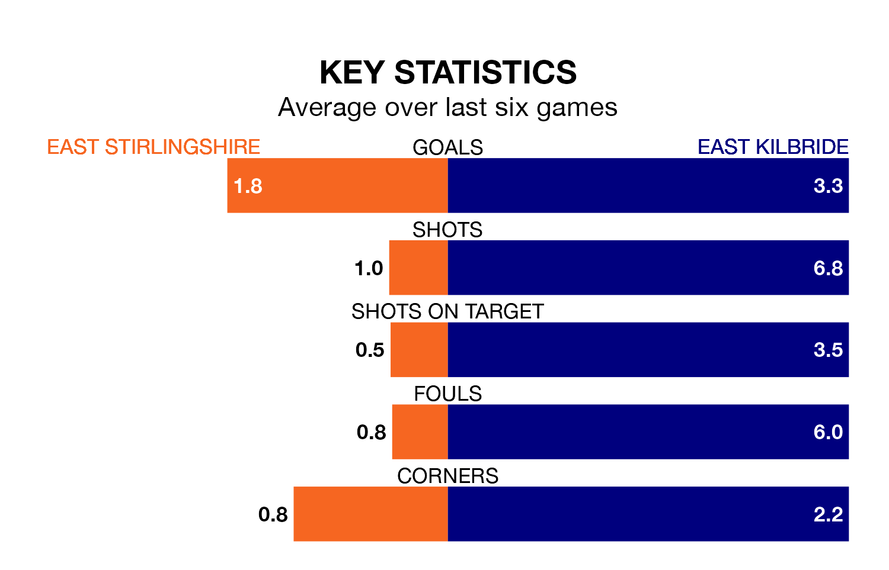

East Kilbride travel to the Falkirk Community Stadium for Saturday's match against East Stirlingshire looking to bounce back from defeat last time out in the Lowland Football League.
The Kilby, who sit top of the league after 27 games, fell to a 4-2 away defeat to Hearts U21 on February 23.
They face an East Stirlingshire side who picked up a win in their last match, a 3-1 victory against Edinburgh University, and who sit 16th in the table.
With 81 goals in 27 games so far this season, East Kilbride are the league's highest scorers with 3.0 goals per game. And they are conceding fewer than average, letting in 34 goals at a rate of 1.3 per game.
East Stirlingshire, meanwhile, are below average scorers, with 1.5 goals per game, compared to a league average of 1.7. They have conceded 1.9 goals per game.
In the last 10 years, East Stirlingshire and East Kilbride have played each other on 11 occasions. East Stirlingshire won three of them, East Kilbride five, and they drew three times.
On average, the Shire scored 1.5 goals and the Kilby 1.4 in those matches.
Their last meeting was on August 5, when East Kilbride won 2-1 at home.
The Shire are in mixed form in the Lowland Football League, with three wins and a draw from their last six games.
With five wins and one loss over that period, the Kilby's form is better – they have taken 15 points from 18, compared to the home team's 10.
Updated: 09:34 (UTC), 08/03/24